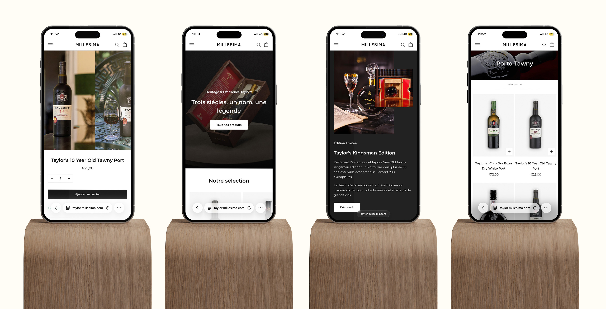
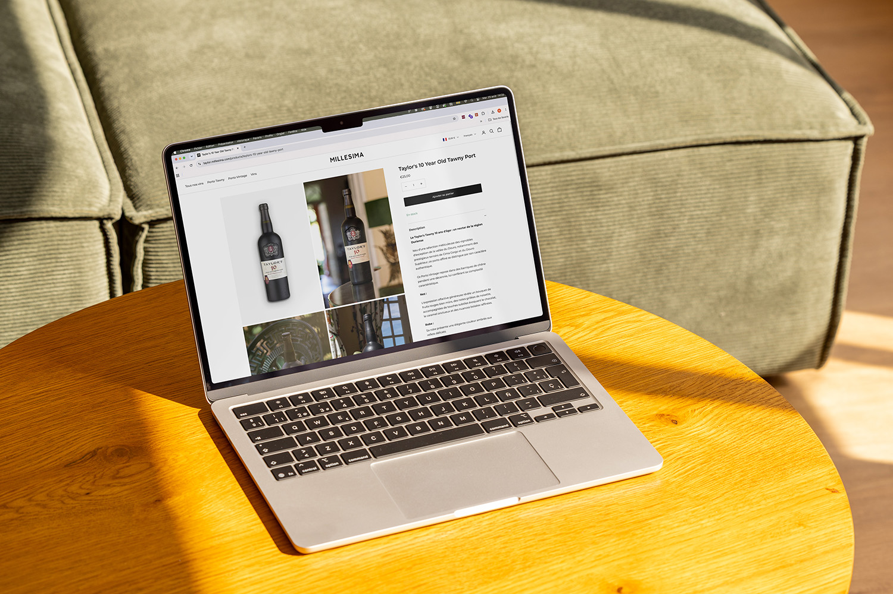

UI/UX & Shopify
Branding Millesima
Palette de couleurs
#1D1D1D
Principale
#FFFFFF
Couleur de fond
Typographie
Aa Bb Cc
Dd Ee Ff
Gg Hh Ii
Porto Tawny 20 Ans Un tawny d'une rare complexité, aux arômes de fruits secs et d'épices douces, élevé en fûts de chêne.
Architecture UX & E-boutique
Arborescence
E-boutique

Vue mobile du site

Vue desktop du site